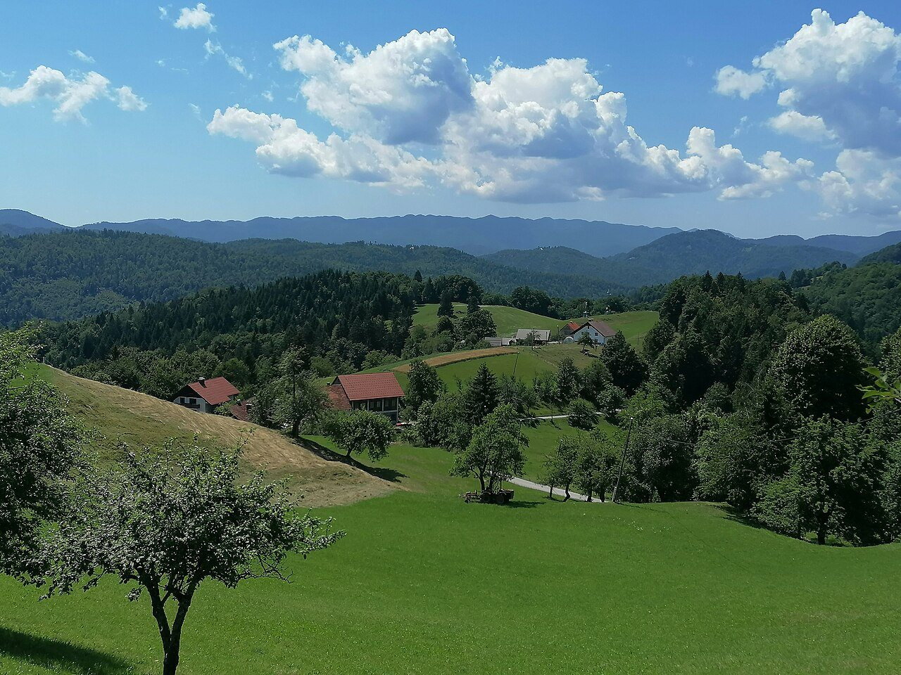
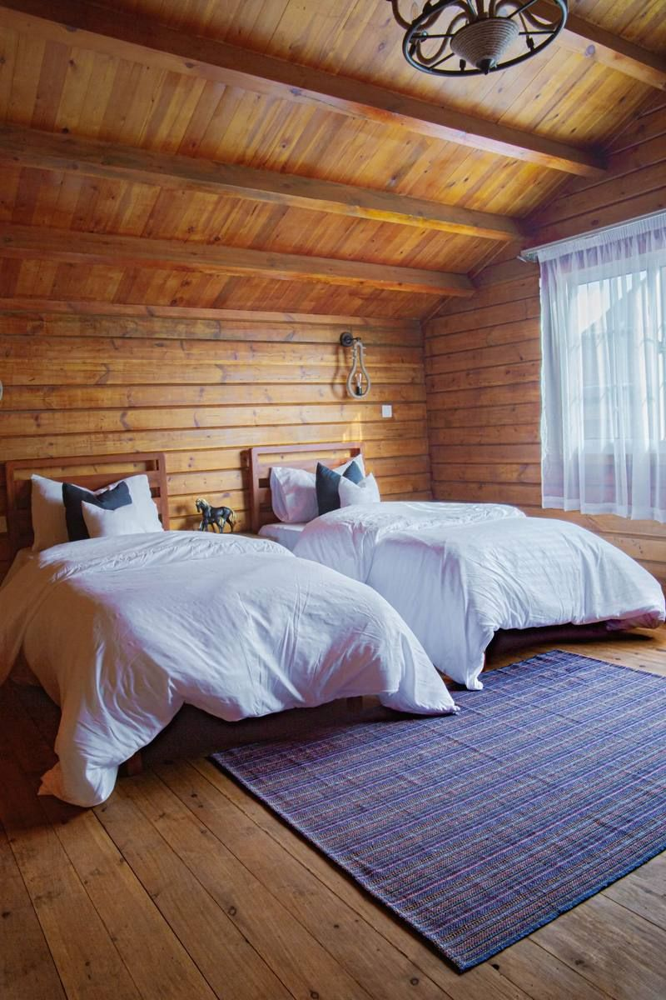
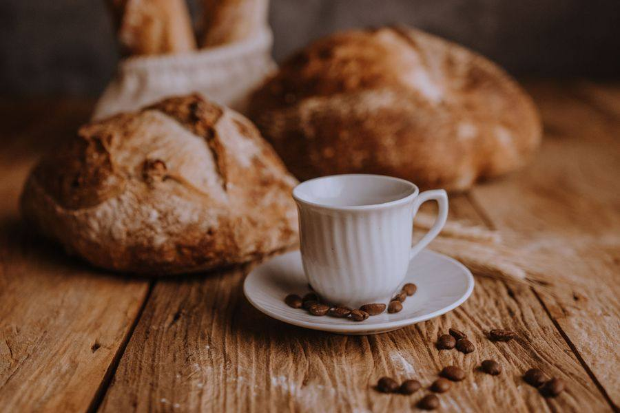
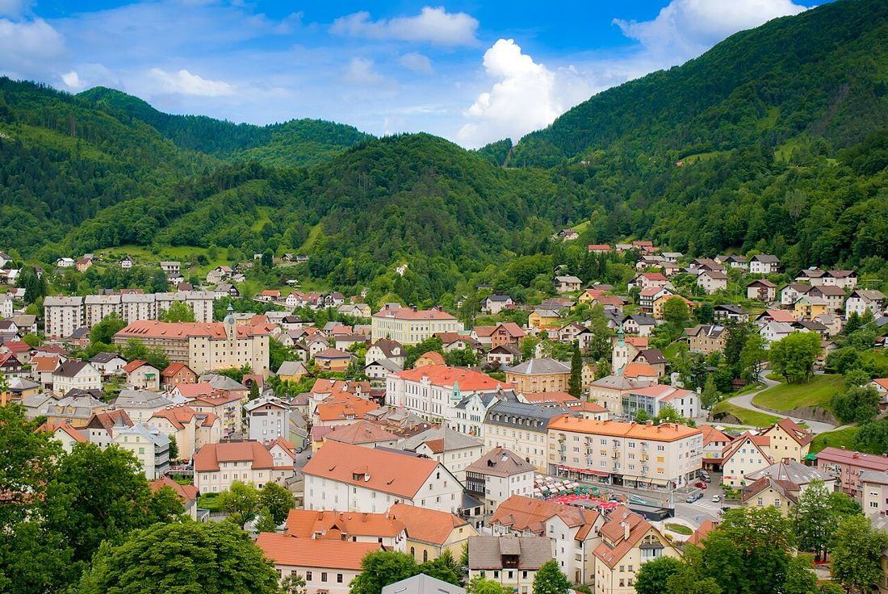

Hribi okoli IdrijeDružinska hiša z zajtrkom v vasi Govejk. Do Idrije je deset minut vožnje, do Žirov pet.
Pri nas
Sobe so preproste in čiste, zjutraj je na mizi zajtrk, zvečer pa se lahko usedete na teraso pri baru in poslušate, kako je v vasi tiho.
Vse sobe imajo mizo, TV in brezplačen Wi-Fi, večina tudi lastno kopalnico. Večerjo skuhamo, če nam to sporočite vnaprej. Parkirišče pri hiši je brezplačno.
Ocene so z Bookinga, oktober 2026.

Sobe
Do štiri osebe · velika zakonska in dve enojni postelji · lastna kopalnica
PovprašajCene so odvisne od termina in števila gostov. Pošljite povpraševanje in odgovorimo s točno ceno.

Zajtrk in večerja
Zajtrk je vsak dan. Če greste zgodaj na pot, vam ga pripravimo za s seboj. Pripravimo tudi vegetarijanskega ali brez glutena, samo povejte prej. Večerjo skuhamo po dogovoru.
»Za zajtrk smo dobili celo domač topel zavitek.«Oliver, Avstrija
Motorji prespijo na varnem in suhem.
Sobe čistimo s sesalnikom Hyla, ki prah ujame v vodo.
Velika terasa za večer po izletu.

Okolica
Mesto živega srebra na Unescovem seznamu svetovne dediščine. Ob obisku poskusite idrijske žlikrofe in poglejte idrijsko čipko.
Najbližji kraj, če prihajate z Gorenjske.
Skala, težka okoli 30 ton, ki se drži v ravnotežju sredi gozda. Povemo vam, kako pridete do nje.
Gostje o nas
»Družinsko vodeno prenočišče je bilo najboljše na vsem našem potovanju. Za vse naše želje so poskrbeli zelo pozorno in prijazno.«Nicole, Slovenija
»Vsi so bili zelo prijazni in zgovorni. Sobe so bile čiste in udobne. Hiša stoji v majhni vasi v hribih, do Idrije je okoli deset minut po ovinkasti cesti.«Oliver, Avstrija
Povpraševanje